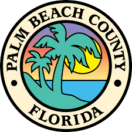

Palm Beach County Resources
Therapy Providers
Boys Town South Florida – Behavioral Health Clinic
Boys Town South Florida’s Behavioral Health Clinic provides outpatient services for children, teens, and young adults (infants through age 22) experiencing emotional, behavioral, or academic challenges...
Diagnostic Centers
Early Steps (Treasure Coast Early Steps)
Easterseals Florida is a statewide nonprofit dedicated to empowering children, adults, and veterans with disabilities...
Florida Atlantic University – Center for Autism & Related Disabilities (FAU CARD)
The FAU CARD is a free, community-based program that supports individuals with autism spectrum disorders...
Schools & Programs
Palm Beach School for Autism
Palm Beach School for Autism is a tuition-free public charter school in Lake Worth, Florida, serving students on the autism spectrum...
Connections Education Center of the Palm Beaches
Connections is a nonprofit educational center in Palm Beach County that delivers specialized instruction and support...
The Els Center of Excellence (Els for Autism Foundation)
Els for Autism is an organization founded by professional golfer Ernie Els and his family...
After-School & Recreation
Palm Beach County Therapeutic Recreation Complex (PBC Parks & Recreation)
The Therapeutic Recreation program through Palm Beach County Parks and Recreation is designed to promote inclusion and well-being...
Nonprofits & Support Groups
The Arc of Palm Beach County
The Arc of Palm Beach County is a nonprofit organization that supports individuals with intellectual and developmental disabilities...
Autism Project of Palm Beach County (APPBC)
The Autism Project of Palm Beach County provides education, resources, and community support to ensure children and adults on the spectrum have the tools to succeed...